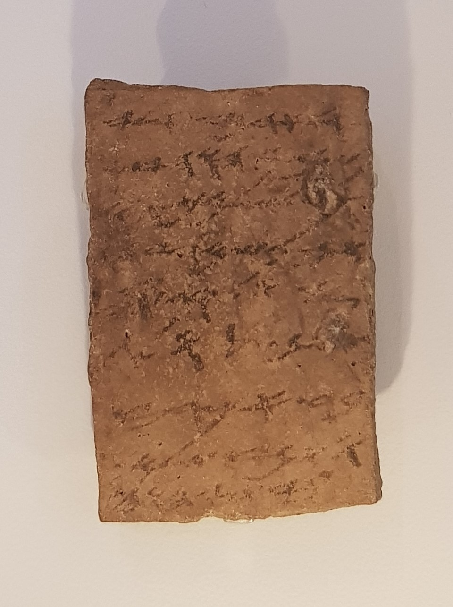

Arad Ostraca

Dozens of ink-written letters on pottery sherds from the Judahite fortress at Arad, excavated by Yohanan Aharoni. They are the working correspondence of the fortress commander Eliashib: troop movements, supply orders, and deliveries of grain, wine, and oil, written in the final years before Babylon destroyed Judah. One letter mentions supplies for the 'house of Yahweh.'
Biblical Significance
These are the last letters of a kingdom about to fall — the same southern frontier Jeremiah watched as Babylon closed in. They show a Judah that prayed, supplied its troops, and still sent offerings to the house of the LORD while the prophets warned that judgment was at the door. Reading them beside Jeremiah 34 feels like holding the other side of the conversation.
Interpretations
Scholars agree the letters are genuine Judahite military correspondence from c. 600 BC; debate concerns a few readings, including the ‘house of Yahweh’ phrase.